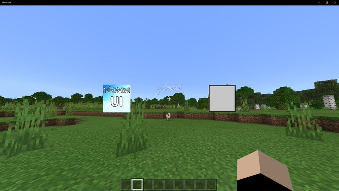

こんにちはシューです
今回は私が普段触っている"UI"について解説してみようと思います
uiって何ぞや？って人も多いと思います
思い浮かべてみてください。
ちょっと昔にボタンを追加してインベントリのカーソルを動かす...みたいなリソースパック、ありませんでしたっけ？
あれを作るのにuiというものが使われます
実際に私も作ったことがあります
さて、uiについてもう少し深く掘り下げていきたいと思います
そもそもuiはユーザーインターフェースの略です
パソコンにUSBのメスとか、HDMIがついてるところのことをインターフェースと言ってるのを見たことありませんか？
USBがたくさんついてたりすると「インターフェースが充実してる」なんて言ったりもします
そしてこのユーザーインターフェースというのを簡単に説明すると
マウスやキーボードのように実際に触ったりして情報を受け取る部分という説明であっていると思います
要するにインターフェースはデザインでユーザーインターフェースは実際に触る部分という感じで伝わるでしょうか
マイクラで使われるuiについて掘り下げていきます
マイクラでいうuiはマイクラbe、統合版で使える機能になります
残念ながらjeにはuiという概念がありません
このuiでできることは結構ありますし、極めていくと私自身でも「そんなことで来たの？！！？」と驚いてしまうことがたくさんです
簡単なところで言うと、テキストを表示させたり、画像を表示させたり、ボタンを追加させたりします
また別の記事で解説仕様と思っていることなんですが、uiで画像をアニメーションさせたり...なーんてこともできます
ほかにも例えばインベントリにいる人形を移動させたり、大きくしたり、また消したりなんてこともできます
追加だけではなく、既存のものをいじることもできます
ただ制限はありますけどね（笑）
ほかにも私が知らないだけでもっといろんな機能があるかもしれません
この記事を読んだ後で自分で探して、試してみても面白いと思います
して、そう聞いて中には「ぼくもuiを使ってカスタマイズしたい！！」って思う人もいるとおもいます
私自身もいろんな人にuiを使っていろんな情報を共有してほしいんですが
uiって実は結構複雑で難しいところがある上に、公式から特にリファレンスが公開してあると可もないんですよね
そんな少ない情報の中いじらないといけないので挫折する人も多いと思います
実際私も最初見たとき何が何だか分かんなかったです
実際に解説を見て「なるほど」とある程度理解はできたつもりですけどやっぱりわからないことが多いです
ですが安心してください
この記事で私ができる限りわかりやすく解説してみるので、何度も読み返してゆっくりと理解してください
焦らず一つ一つ理解することが大事ですので一緒に頑張りましょう！
実際に作る前に一回uiの仕組みを解説していきたいと思います
まずuiはjsonというデータ言語、いわゆるプログラミング言語というものです
ちょっと待ってください、プログラミングと聞いて「難しそう」と思ったかもしれませんが
jsonは実は簡単で単純な言語になっているのでちょっと仕組みを理解しちゃえばわかります
今回はuiについてですのでjsonの解説は飛ばします
ですが！jsonについてとってもわかりやすく説明している記事があるのでそちらをご覧いただけてもらえばなと思います
リンクはこちら
jsonはいいとしてuiについてですが、uiはアイテムのように新しくjsonを追加して...みたいな感じではなく
すでに存在しているファイルをいじってテキストだったりを追加していきます
なのでブロックをクリックしたらGUIを追加する...なんてことはできません
さらに言ってしまえばボタンなどは公式が追加したものだけしか使えないので「あの機能が欲しい！」からといってなんでもできるわけではありません
今後に期待ですけど、それでもすごいことをしている人はたくさんいますけどね...
新しくテキストなどを追加するときは、既存の要素にいくつかの構文を追加して追加していきます
実際に作って理解していきましょう！
ここまで長かったですけど、ついに作っていきますよ
ファイル構成は以下の通りです
ファイル構成の見方は、ドット(.)の右側についてる文字が拡張子と言ってこれはファイルになります
ドットがついていないものはフォルダになって箱のようなものになります
ファイルとフォルダについては各自調べてください
今回やることは先ほど言ったテキスト、画像、ボタンを表示していこうと思います
まずフォルダを作る前にテンプレートを入手するところから始めましょう
分かりやすく動画を用意しました
DLリンクはこちらからどうぞ
動画の通りにダウンロードしてもらって、uiフォルダだけを別でコピーしてもらえば大丈夫です
ではファイル構成の説明をしていきます
まずは一番上のリソースパックです
まぁわかると思うんですけどこれはもとになるフォルダなります
この中にフォルダやらファイルやらを入れていきます
名前はなんでも大丈夫ですけど今回は分かりやすくリソースパックにしました
次にuiです
こちらもフォルダになっていて、実際にこの中に今回いじるjsonを入れていきます
次にuiフォルダの中に入っているファイルです
hud_screen.jsonは実際にいじっていくファイルです
先ほどコピーしたuiフォルダからhud_screen.jsonをコピーして今回作ったフォルダに入れましょう
test.pngは画像ファイルです
正方形じゃなくてもいいんですが、今回は正方形の画像を使うので何かしら正方形の画像を用意してください
manifest.jsonはパックを認識させるのに大事なものです
注意ですがここからはuiフォルダの中には入れないでください
こちらは各自調べてください
pack_icon.pngはパックのアイコンになります
正方形の画像なら大きさはなんでも大丈夫だったと思います
では！ファイルの中を見て行きましょう！...と行きたいんですが
一度hud_screen.jsonをすでに見た人ならわかると思うんですけど
こちらなんと2200行オーバー...結構な量ですので全部解説はできないですし頭が痛くなってきます
でも大丈夫です。いじるところは少ないです
ではではかいていきましょう
まずは一番したまでぐぐーっとスクロールしましょう
上のようなコードが見えると思います
このコードは実際のプレイ画面に表示するところです
"controls"という項目があると思うんですが、そこを下のように追加しましょう
,をつけ忘れないように気を付けてくださいね
さて、こちらの{ "txt@hud.txt": {} },は要素を作るよ～くらいに思ってもらって大丈夫だと思います
txt@hud.txtのtxtの部分は前後で変えても大丈夫ですが、あとでこんがらがってしまうので同じにしておくのが妥当です
これをそれぞれ名前を変えて追加していく感じです
なんですが、どのファイルでもこういう感じで追加できるかと思いきや少し変わってたりするので気を付けてください
次に"hud_content"の{とつながる}に,をつけて以下のコードを追加してください
これをマイクラにインポートすると以下のようになります

では一番上の要素から解説していきます
まずはテキストですね
・"txt": {中身は省略}
こちらは要素といいます
この中にテキストを表示する構文を入れたりとかしていきます
hud_contentのcontrolsの中で指定した{ "txt@hud.txt"}//略
で指定したtxtの部分をかきます
・"txt": {のすぐ下にある二つの項目
これは正直あまり気にしなくて大丈夫です
重要なのはその下になります
・controls
この中に構文を入れていきます
・title_panel
これはテキストの表示部分にかかわる構文を入れていくところだと思います
・type
タイプを選びます
・size
サイズを選びます
今は正方形の形にしてますが
基本長方形なので自由に変えて大丈夫です
・text
実際に表示するテキスト
langIDを書くことでlangファイルで指定することもできます
・layer
レイヤーです
・shadow
影をつけるか否かを指定できます
テキスト表示はこんな感じでできています
お気づきの方もいると思いますが
sizeなどのようにテキストにかかわらず、どこでも使えるようなものもあります
使って確かめていきましょう！
次に画像の表示部分です
基本的には一緒になります
違うのはtypeがimageになっているところと構文が一つ追加されてるところです
・texture
テクスチャ、つまり表示する画像を指定します
これはpack_iconやmanifest.jsonがある層と同じ層から指定します
texturesの中に指定したいならtextures/と指定してフォルダなどを指定すれば大丈夫です
・offset
これは場所を指定します
テキストでも使えます
これで画像を表示することもできるようになりましたね！
最後にボタンを表示させようと思います
と、その前に一つ注意ですが
ボタンは当たり前ですが、タッチパネルでしか使えないので
win10でごく一般のモニターを使ってる人は使えません
一つ工夫して書くことでwin10の時はボタンを表示しないこともできます
それはまた今度解説していきたいと思います
button@common_buttons.light_content_button
ボタンを追加するときは要素の開始するやつに@をつけて文字を追加する必要があるみたいです
・$pressed_button_name
こちらはボタンを押したときに実行するイベントです
こちらはもやんが用意したものしか使うことができないので気を付けてください
そのファイル内で使われているもの以外は使えないです
$pressed_button_nameをファイル内で検索をかけてやれば使えるものがわかります
いかがでしたか？
記事をかくのは少し苦手なので分かりにくいところもあるかと思います
ぜひ質問してください
uiにはほかに面白い要素があるんですが
長くなってしまうので、別の記事で解説していこうと思います
ぜひTwitterのフォローや、サイトのブックマークよろしくお願いします
今回テストで作ったファイルのzipファイルを配布しておきます
ご自由に使ってくれてかまいませんが
中に入っている画像を使うのだけはよしてください
フリー素材じゃないです
Download